A visual language anyone can build with.
A visual language is the colors, text styles, spacing, and other choices that make a design feel consistent. Copy That analyzes an image and organizes what it finds into reusable style values, called design tokens.
Inspiration can come from a screenshot, a photograph, a website captured as an image, or another visual. Shared style files and guides reduce repeated work, helping people and AI agents build screens for websites and apps, try changes, and refine the design until it fits their vision.
The current app focuses on interface images—screens from websites and apps. The wider goal is to make design accessible to anyone. This is a project showcase; follow the GitHub setup instructions to try the application on your own computer.
From visual inspiration to a shared style
These examples show how one visual direction can carry across different products. They are concept studies, not results produced by Copy That.
Starting images
The examples here are illustrated audio controls, with colors, lettering, and materials that could inform a shared style. The current implementation focuses on interface images; other visual sources need their own accuracy checks.
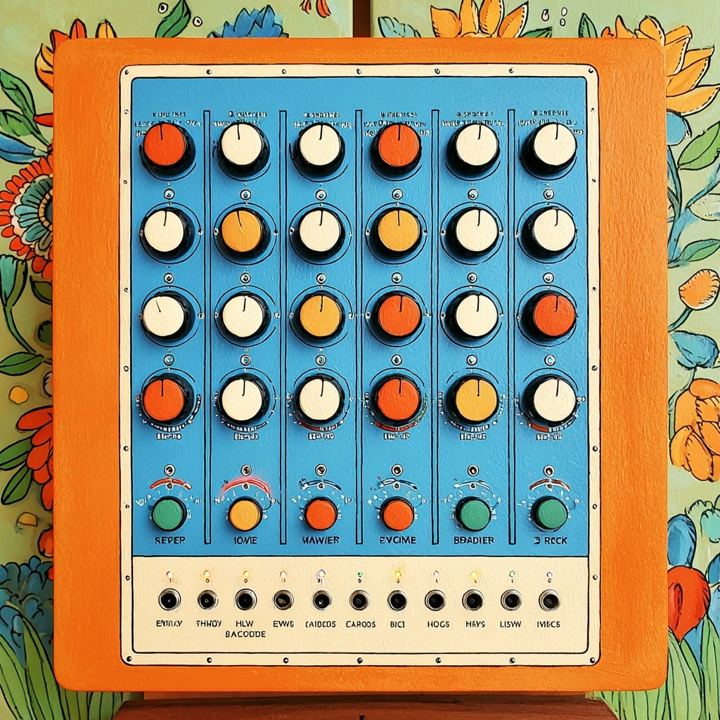
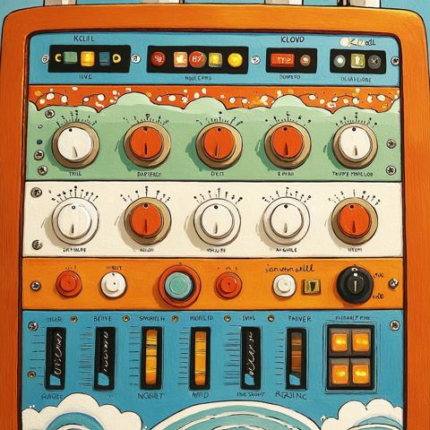
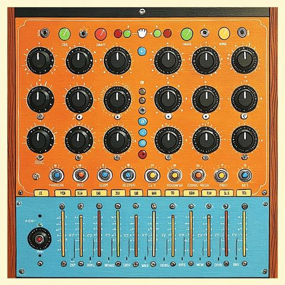
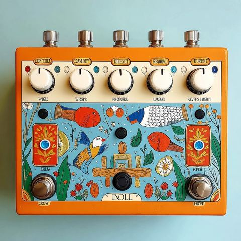
Example style guide pages
A guide makes the style repeatable
These Fieldwork studies combine nature, craft, and hardware cues for digital music tools. A style guide explains the colors, lettering, materials, and controls so different products feel related.

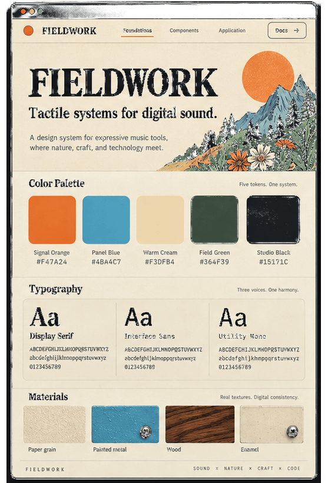

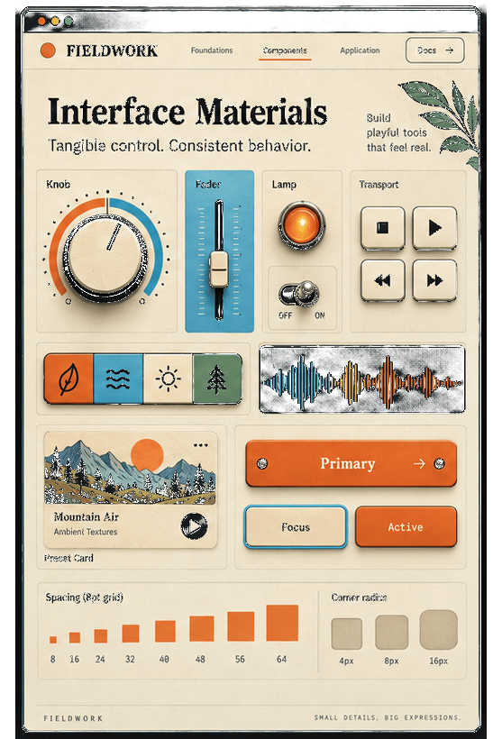

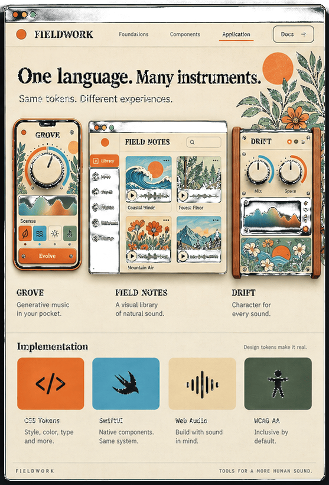
Example product concepts—these were not generated by Copy That
Same language, different instruments
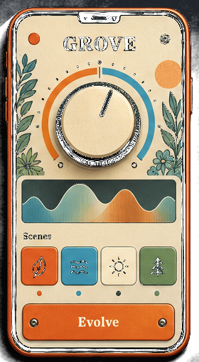
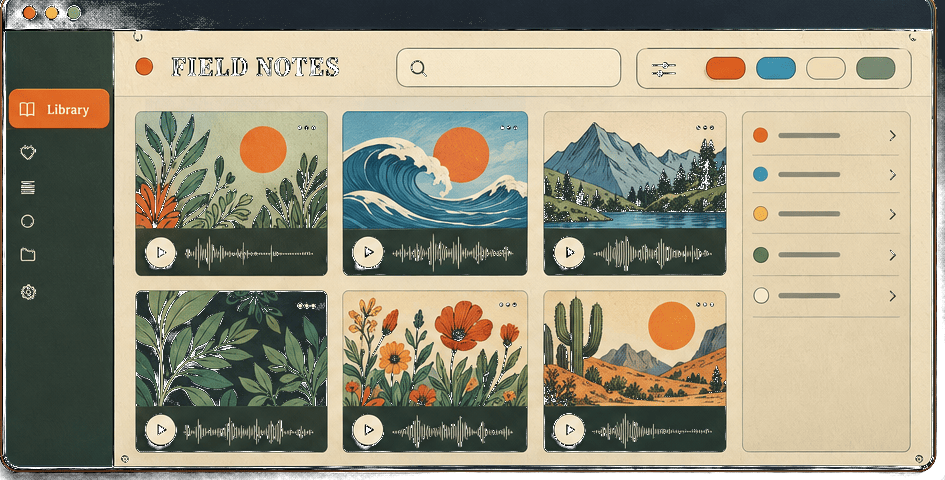
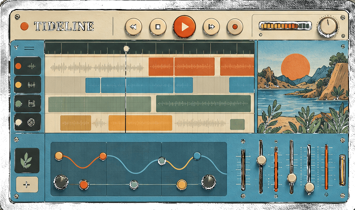
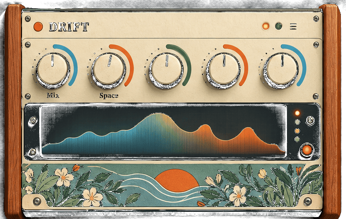
What you can use today
The project can analyze an uploaded image, organize the visual details it finds, and export reusable style values. It also includes checks that help keep behavior and file formats consistent.
Find → organize → reuse. Colors, text styles, spacing, shadows, corner shapes, and transparency become named values that can be reused across an interface. Downloads include files for developers and a shareable style guide.
One set of choices, many uses. The same values can guide a person, an AI agent, or the code behind an interface. Shared files make it easier to try a direction, compare it, and carry the decisions into the next iteration.
Checks you can inspect. Automated tests check the code, exported file structure, and key actions in a simulated browser. These protect behavior; accuracy on real images still needs separate evaluation. The latest test run is linked below.
People set the direction; agents help with the work
Plans and decisions are written down in the project. AI agents help draft and build changes. I review the actual results before treating the work as complete.
Image-processing software and Claude, an AI model, help interpret the image. People still choose the direction, decide what belongs in the product, and approve releases.
Examples and verification
These examples show what reusable files look like, alongside links to the project’s automated checks. The files are illustrations; the browser tests use simulated responses rather than analyzing real images.
{
"color": {
"signal-orange": {
"$type": "color",
"$value": "#F47A24"
},
"panel-blue": {
"$type": "color",
"$value": "#4BA4C7"
}
}
}JSON is a structured text file that software can read. This example names two colors; the actual download includes additional information for other tools.
:root {
--color-signal-orange: #F47A24;
--color-panel-blue: #4BA4C7;
--color-warm-cream: #F3DFB4;
--color-field-green: #364F39;
--color-studio-black: #15171C;
}CSS tells a website how to look. These named colors can be reused instead of choosing them again for every element.
Developers can run these commands to check the code and key browser actions. The links show the automated workflow and browser test.
make verify
pnpm test:e2e:mvp
ci.yml on Actions
mvp-phase1-smoke.spec.ts
Upload an image → find visual details → organize reusable values → download style files.
How it works, step by step CURRENT_ARCHITECTURE_STATE.mdProduct scope
Image analysis and reusable downloads are the core workflow. Extra tools run only when requested, and broader features remain separate from that core.
Available in the core workflow
- Colors, text styles, spacing, and shadows
- Borders, rounded corners, and transparency
- Reusable style files and a shareable guide
- A results summary and a download panel
Optional tools and future work
- Mood (inspiration boards) and Lighting analysis: requested separately
- Layout measurements: through the server, on request
- Session history, bulk processing, and mixed media
- Flutter app and Figma design-tool connections
- Automatic use of heavier image-analysis models
Josh Band
Building Copy That in the open, with a goal of making visual design easier to explore, share, and refine—and checking the work as it grows.